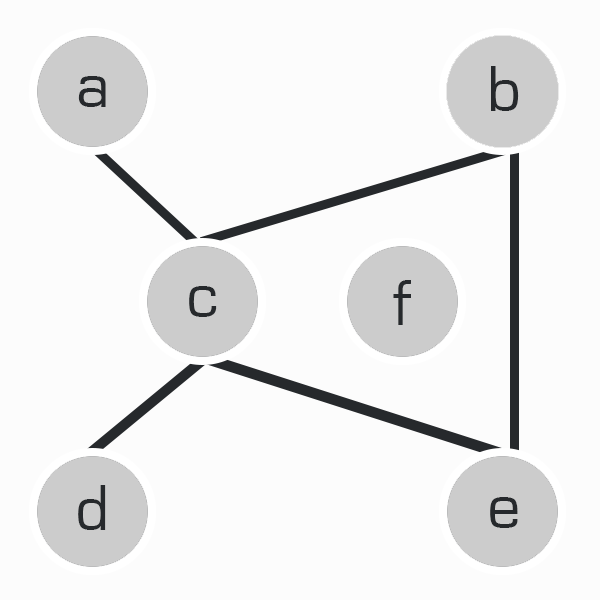

88
Python dictionaries are quite useful for representing graphs, too.
Consider the graph below. Each one of the grey circles is called a vertex, labeled from a-f. Connecting these vertices are edges. In this particular graph, there are five edges: a to c, b to c, b to e, c to d, and c to e, which can be shortened to ac, bc, be, cd, and ce.

Here's how you would represent this particular graph in a Python dict. All of the vertices in the graph are keys, and the vertices they connect to are represented in the value, as a list:
|
|
Task Eighty-Eight
Define a function, findEdges(), whose input is a graph (dict), and output is a sorted list of edges in the graph. For example, with an input of graph1, your output should be exactly the following:
| ['ac', 'bc', 'be', 'cd', 'ce'] |
Questions for You
Have you sorted your output list?
Notes
Note how vertex f, which does not connect to anything, is still a key in graph1, but its value is an empty list.
If you encounter duplicate edges, such as 'bc' and 'cb', keep the one which comes first alphabetically. In this case, you'd keep 'bc', and discard 'cb'.
Questions for You
Have you sorted your output list?
NOTES
Note how vertex f, which does not connect to anything, is still a key in graph1, but its value is an empty list.
If you encounter duplicate edges, such as 'bc' and 'cb', keep the one which comes first alphabetically. In this case, you'd keep 'bc', and discard 'cb'.